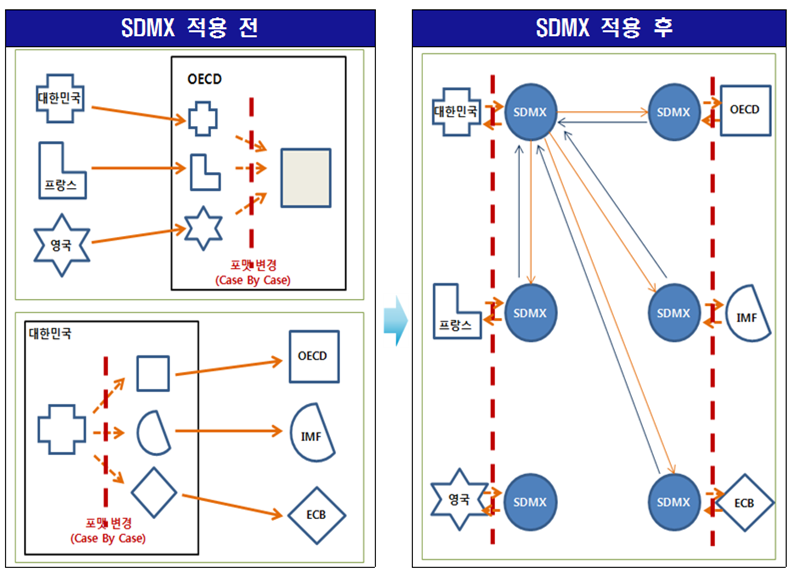

데이터 과학자와 함께 하는 제19대 대통령 선거
OECD를 포함한 국제기구 데이터 읽어오기
1. OECD를 포함한 국제기구 데이터셋 1
경제개발협력기구(OECD)에서 취합하여 발간하는 데이터를 OECD.Stat에서 직접 가져오는 방법은 다음과 같이 크게 세가지가 있다.
- 추출하고자 하는 데이터에 대한 명칭을 찾아 http://stats.oecd.org/Index.aspx?DataSetCode=PNNI_NEW처럼 웹브라우져 주소창에 넣어 데이터를 긁어오는 것으로 그다지 권장하고 싶지는 않다.
- OECD Open API를 활용하여 데이터를 받아오는 방법.
- SDMX 질의문 쿼리를 사용해서 데이터셋, 국가, 관측점 범위를 특정하여 가져오는 방법.

SDMX는 데이터와 메타데이터로 구성되고, SDMX에 참여하고 있는 국제기구는 다음과 같다.
- Bank for International Settlements (BIS)
- European Central Bank (ECB)
- Eurostat (the statistical office of the European Union)
- International Monetary Fund (IMF)
- Organisation for Economic Co-operation and Development(OECD)
- United Nations Statistics Division(UNSD)
- World Bank
2. 통계데이터 및 메타데이터 교환 표준(SDMX) 활용
SDMX을 활용하여 데이터를 불러올 경우 다음 세가지 정보가 필수적이다. 사례를 통해 좀더 자세히 한걸음 들어가 보자.
- UN_DEN: 데이터셋 코드를 지칭(Trade Union Density)
- AUS+CAN+FRA+DEU+NZL+GBR+USA+OECD: ISO 국가코드
- startTime=1960&endTime=2012: 데이터 추출 시점
3. R 팩키지
각 국제기구에 직접 붙어 데이터를 추출하기 보다 데이터 형식으로 SDMX를 지원하는 R 팩키지를 통해 데이터를 추출하면 효율적으로 작업을 수행할 수 있다. 다수 팩키지가 국제기구 SDMX 데이터 형식을 지원하기 위해 개발되었고 선의의 경쟁을 펼치고 있다. 개발당시에는 동작을 잘 했으나, 국제기구에서 인터페이스와 자료를 변경하여 지금은 동작하지 않는 팩키지도 존재하는 것이 사실이다.
- XML2R: 2014-03-10 개발 최종일
- rsdmx: Tools for Reading SDMX Data and Metadata: 2016-11-15 개발 최종일
rsdmx 팩키지는 SDMX-ML 형태로 데이터와 메타데이터를 읽어들일 수 있는 저수준 도구 모음이다.
3.1. OECD 데이터 목록 확인
rsdmx 팩키지를 불러와서 OECD에서 추출 가능한 데이터를 확인한다.
library(rsdmx)
# 1. 데이터 확인 --------------------------------------------------------------------------
# https://en.wikipedia.org/wiki/SDMX
# https://www.r-bloggers.com/deaths-from-assault-over-time-in-40-relatively-rich-countries/
## 1.1. OECD 데이터 목록
dsUrl <- "http://stats.oecd.org/restsdmx/sdmx.ashx/GetDataStructure/ALL"
ds <- readSDMX(dsUrl)
dsdf <- as.data.frame(ds)
head(dsdf) id agencyID
1 QNA OECD
2 PAT_IND OECD
3 SNA_TABLE11 OECD
4 EO78_MAIN OECD
5 ANHRS OECD
6 GOV_DEBT OECD
Name.fr
1 Comptes nationaux trimestriels
2 Brevets - Indicateurs
3 11. Dépense des administrations publiques par fonction (COFOG)
4 Perspectives économiques No 78 - décembre 2005 - Projections annuelles pour les pays OCDE
5 Heures moyennes annuelles ouvrées par travailleur
6 Dette de l'administration centrale
Name.en
1 Quarterly National Accounts
2 Patent indicators
3 11. Government expenditure by function (COFOG)
4 Economic Outlook No 78 - December 2005 - Annual Projections for OECD Countries
5 Average annual hours actually worked per worker
6 Central Government Debt
version uri urn isExternalReference isFinal validFrom validTo
1 <NA> <NA> <NA> NA NA <NA> <NA>
2 <NA> <NA> <NA> NA NA <NA> <NA>
3 <NA> <NA> <NA> NA NA <NA> <NA>
4 <NA> <NA> <NA> NA NA <NA> <NA>
5 <NA> <NA> <NA> NA NA <NA> <NA>
6 <NA> <NA> <NA> NA NA <NA> <NA>
## 1.1. 데이터구조 정의 (DataStructureDefinition, DSD)
dsdUrl <- "http://stats.oecd.org/restsdmx/sdmx.ashx/GetDataStructure/TABLE1"
dsd <- readSDMX(dsdUrl)
# DSD에서 코드 목록(codelist) 받아오기
cls <- slot(dsd, "codelists")
codelists <- sapply(slot(cls, "codelists"), function(x) slot(x, "id"))
codelist <- as.data.frame(slot(dsd, "codelists"), codelistId = "CL_TABLE1_FLOWS")
# DSD에서 concepts 확인
concepts <- as.data.frame(slot(dsd, "concepts"))3.2. OECD 데이터 가져오기
readSDMX 함수를 활용하여 추출하고자 하는 데이터와 기간을 넣어 자료를 추출한다.
# 2. 데이터 불러오기 --------------------------------------------------------------------------
sdmx <- readSDMX(providerId = "OECD", resource = "data", flowRef = "WEALTH",
start = 2010, end = 2015)-> Fetching 'http://stats.oecd.org/restsdmx/sdmx.ashx/GetData/WEALTH/all/all?startPeriod=2010&endPeriod=2015'
df <- as.data.frame(sdmx)
head(df) LOCATION VAR AGE TIME_FORMAT UNIT POWERCODE obsTime
1 AUS MNW TP P1Y AUD 0 2012
2 AUS MENW TP P1Y AUD 0 2012
3 AUS MNW_MENW TP P1Y RATIO 0 2012
4 AUS RATIO_TOP TP P1Y RATIO 0 2012
5 AUS RATIO_BOTTOM TP P1Y RATIO 0 2012
6 AUS SHARE10 TP P1Y PC 0 2012
obsValue
1 5.958200e+05
2 3.650000e+05
3 1.632384e+00
4 9.506181e+00
5 9.591151e-01
6 4.493983e+01